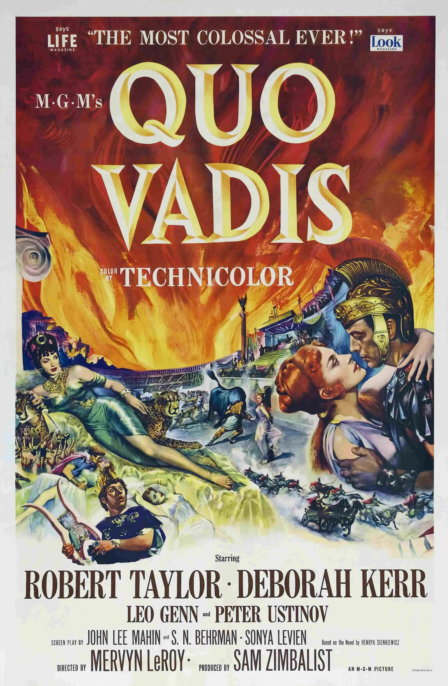

Quo Vadis
24th Academy Awards
(Oscars 1952)
8 Nominations, 0 Awards
| Nominations | ||
|---|---|---|
| Category | Nominees | Result |
| Best Motion Picture | Sam Zimbalist | Nominated |
| Actor in a Supporting Role | Leo Genn | Nominated |
| Actor in a Supporting Role | Peter Ustinov | Nominated |
| Cinematography (Color) | Robert Surtees and William V. Skall | Nominated |
| Film Editing | Ralph E. Winters | Nominated |
| Art Direction (Color) | Cedric Gibbons, Edward Carfagno, Hugh Hunt, and William A. Horning | Nominated |
| Costume Design (Color) | Herschel McCoy | Nominated |
| Music (Music Score of a Dramatic or Comedy Picture) | Miklos Rozsa | Nominated |